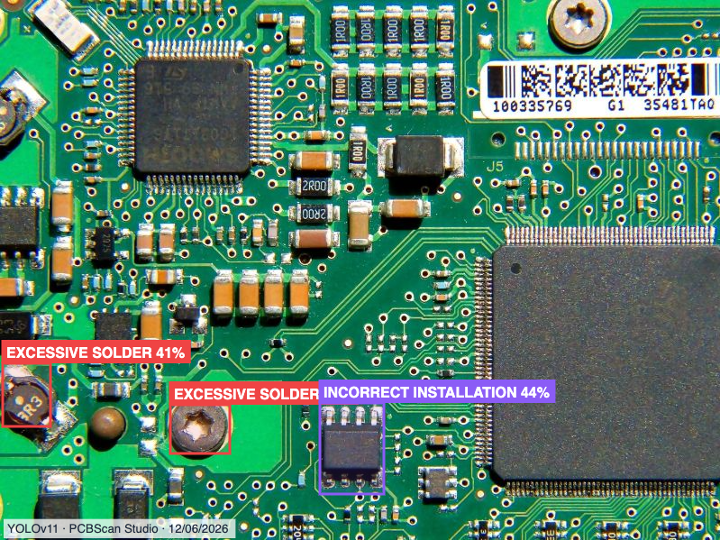
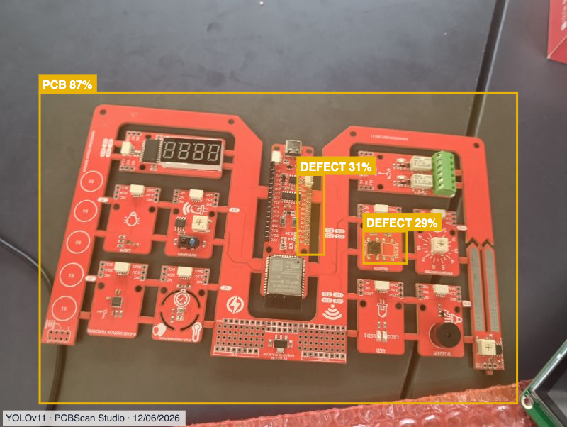

PCBScan
Documentation du système intelligent de contrôle qualité et de détection de défauts sur circuits imprimés (PCB).

Historique des Analyses

Détails de l'Inspection (Fusion AI)

Résultat de l'Analyse Visuelle (YOLOv11) - Exemple 1

Résultat de l'Analyse Visuelle (YOLOv11) - Exemple 2

🏗️ Architecture Globale
Le projet s'appuie sur une architecture moderne séparant l'interface utilisateur de la logique serveur lourde :
- Frontend (Dashboard) : React.js, Vite, TailwindCSS, Recharts. Glassmorphism dynamique.
- Backend (API) : Python, FastAPI, OpenCV, YOLOv11 (Roboflow), EasyOCR.
🖥️ Le Flux de l'Interface (Frontend)
L'interface React orchestre le processus de capture en temps réel avec une expérience fluide. Voici comment la magie opère côté client :
Acquisition de l'Image (Deux Modes)
L'utilisateur dispose de deux méthodes d'inspection :
- Mode "Upload File" : Permet d'importer manuellement une photo haute définition (JPG, PNG) depuis son ordinateur.
- Mode "Scanner Live" : L'utilisateur autorise l'accès à sa caméra (via navigator.mediaDevices). Le flux vidéo s'affiche en direct avec une animation de scanner "laser".
Boucle WebSocket Silencieuse (Auto-Capture)
Le flux vidéo est envoyé en continu via WebSocket vers le backend. Le serveur analyse la Densité des Arêtes (Edge Density). Si le serveur détecte plus de 3.5% de densité (typique des pistes et composants d'un PCB), il déclenche la capture automatique !
Validation et Inspection Multi-Couches
La photo haute résolution est envoyée au endpoint /process-image. Le backend lance l'extraction de texte (OCR) et la détection de défauts physiques via DEUX modèles YOLOv11 simultanés (un pour les soudures, un pour l'assemblage).
Synthèse et Affichage
Si le PCB est connu, le résultat s'affiche instantanément avec le badge CACHE HIT ⚡. Sinon, un Agent IA (Fusion AI) compile les données OCR et YOLO pour rédiger un rapport qualité complet, directement affiché dans le dashboard.
🥽 Focus UX : Le Mode AR (Réalité Augmentée)
Le Dashboard intègre un bouton "Activer Mode AR (Simulation)" qui transforme radicalement l'expérience utilisateur pour simuler la vue d'un opérateur équipé de lunettes connectées sur ligne d'assemblage :
- Scanner HUD : La caméra passe en mode rouge laser avec la mention
AR HUD TRACKING.... - Effet 3D (Perspective) : L'image analysée subit une transformation CSS 3D pour simuler un affichage holographique flottant.
- Bounding Boxes Néon : Les défauts sont mis en évidence avec des polygones SVG bleus néons éclatants et des ombres portées lumineuses.
⚙️ Détails du Backend (main.py)
Le fichier main.py contient toute la logique complexe du
système. Voici les algorithmes majeurs que nous y avons programmés :
1. Extraction d'Informations (OCR bilingue)
Le texte sur les composants aide l'IA à identifier le modèle de la carte.
# Initialisation du modèle OCR bilingue (Français, Anglais)
reader = easyocr.Reader(['fr', 'en'])
# Détection de texte (y compris le texte orienté verticalement)
result_h = reader.readtext(image_path, detail=1, paragraph=False)
# ... code d'extraction des métadonnées ...
2. Filtre d'Auto-Capture Intelligent (Anti-Personne & Edge Density) /ws/detect-box
Pour éviter les déclenchements accidentels, l'algorithme ne capture que si l'image présente la complexité visuelle typique d'un circuit imprimé.
# /ws/detect-box - Détection Automatique (Anti-Personne & Densité)
gray = cv2.cvtColor(img, cv2.COLOR_BGR2GRAY)
# 1. Filtre Rejet de Visage (Anti-Personne)
face_cascade = cv2.CascadeClassifier(cv2.data.haarcascades + 'haarcascade_frontalface_default.xml')
faces = face_cascade.detectMultiScale(gray, scaleFactor=1.1, minNeighbors=5, minSize=(100, 100))
if faces_detectees_prennent_trop_de_place:
return False # Ce n'est pas un PCB, c'est un humain !
# 2. Densité des arêtes (Canny) sur le centre de l'image
roi = gray[cy - roi_h//2 : cy + roi_h//2, cx - roi_w//2 : cx + roi_w//2]
edged = cv2.Canny(cv2.GaussianBlur(roi, (5, 5), 0), 30, 100)
density = cv2.countNonZero(edged) / float(roi_w * roi_h)
# Les PCB ont une densité > 3.5% grâce à leurs multiples composants
if density > 0.035:
await websocket.send_json({"detected": True})
3. Dual YOLOv11 & Cache Ultra-Rapide
L'image passe par DEUX modèles YOLOv11 concurrents hébergés sur Roboflow :
1. pcb-solder-defect-detection (Défauts de soudure)
2. defects-2q87r-0lwnp (Défauts d'assemblage).
Le résultat global est mis en cache (sauf si la carte est sans texte "Bare PCB" pour éviter les faux positifs).
# 1. Requêtes concurrentes vers Roboflow (Dual YOLOv11)
with concurrent.futures.ThreadPoolExecutor(max_workers=2) as executor:
future1 = executor.submit(fetch_roboflow, url_model1, "solder_defect")
future2 = executor.submit(fetch_roboflow, url_model2, "assembly_defect")
roboflow_predictions.extend(future1.result() + future2.result())
# 2. Recherche de similarité OCR (Tolérance de 15% d'erreur)
if len(cleaned_extracted) >= 5: # Seulement si du texte est détecté
for key, cached_analysis in cache_data.items():
if difflib.SequenceMatcher(None, cleaned_extracted, key).ratio() > 0.85:
return cached_analysis
4. Résilience Webhook (Fusion AI) & Nettoyage
Le backend ne se contente pas d'appeler l'API Fusion AI. Il intègre une Stratégie de Retry (Fallback) en cas de Timeout (504), et un Nettoyeur Regex pour purger les métadonnées techniques renvoyées par le webhook.
# 1. Stratégie de Retry (Gateway Timeout 504)
while attempt < MAX_ATTEMPTS:
response = session.post(FUSION_WEBHOOK_URL, data=payload, timeout=None)
if response.status_code in [502, 503, 504]:
time.sleep(30) # Attendre que le LLM finisse en arrière-plan
continue
# Si échec total, on renvoie quand même les résultats YOLO (Fallback) !
# 2. Nettoyage des Métadonnées (Regex)
ai_result = re.sub(r'\{\s*"success":\s*true\s*\}', '', ai_result)
ai_result = re.sub(r'Unknown Node', '', ai_result)
ai_result = re.sub(r'^\d{1,2}/\d{1,2}/\d{4},\s*\d{1,2}:\d{2}:\d{2}\s*(AM|PM)$', '', ai_result, flags=re.MULTILINE)
ai_result = re.sub(r'^Node ID:\s*[a-f0-9\-]+$', '', ai_result, flags=re.MULTILINE)
5. Optimisation Embarquée (Raspberry Pi & All-in-One)
Pour fonctionner sur une carte embarquée avec peu de RAM (ex: Raspberry Pi aptivA133), l'extraction OCR lourde a été bypassée. De plus, FastAPI sert directement les fichiers statiques du Frontend React compilés (dist/), transformant la carte en un serveur autonome "Tout-en-un".
# Bypass de EasyOCR pour économiser la RAM de la carte
print("Bypassing EasyOCR initialization to save RAM on Raspberry Pi...")
reader = None
# ...
# Serveur All-in-One : FastAPI héberge l'API ET le Frontend React
import os
from fastapi.staticfiles import StaticFiles
if os.path.exists("dist"):
app.mount("/", StaticFiles(directory="dist", html=True), name="frontend")
🤖 Le Workflow de Fusion AI
Lorsque le backend Python identifie une nouvelle carte PCB, il envoie les défauts YOLO et le texte OCR vers la plateforme Fusion AI. Voici comment cette plateforme traite la requête :
Webhook Trigger & Formatage (Script Node)
Le workflow écoute les requêtes HTTP. Un script JS transforme le tableau de défauts de YOLO (en ajoutant la source "solder" ou "assembly") en un résumé lisible (ex: "Source: assembly_defect - Défaut: Missing Component").
L'Agent IA (Expert Industriel)
Ce nœud utilise un modèle de langage avancé. Il est programmé avec un System Prompt très strict :
Réponse Webhook
L'analyse est renvoyée à notre serveur Python, mise en cache, puis affichée sur le Dashboard avec une mise en forme Markdown professionnelle.
🔌 Intégration Matérielle IoT (ESP32)
Le système ne se contente pas d'un tableau de bord virtuel. Il agit dans le monde physique grâce à un microcontrôleur ESP32 (programmé en C++) connecté au cloud via le protocole MQTT.
Communication Sécurisée MQTT (HiveMQ Cloud)
Le backend Python et l'ESP32 sont connectés au même broker MQTT sécurisé. Dès que l'analyse d'image est terminée, le serveur backend publie instantanément le message DEFECT ou OK sur le topic hafida/robot/twin/command.
Réaction Physique en Temps Réel
L'ESP32 écoute ce topic en permanence. À la réception du message DEFECT, il déclenche le système d'alarme sur la ligne de production :
- Alerte Visuelle : Allumage immédiat d'une LED rouge de signalisation.
- Alerte Sonore : Activation d'un buzzer.
- Écran LCD I2C : Affichage de
"PCB DEFECT! Check Board"ou de"PCB OK"pour informer l'opérateur local.
</> Analyse du Code C++ (ESP32)
Le fichier main.cpp gère la connexion Wi-Fi, la souscription MQTT et l'activation des actionneurs physiques. Voici les extraits les plus importants :
1. Réception des Commandes (MQTT Callback)
Cette fonction est le "cerveau" de la carte. Elle est déclenchée automatiquement à chaque fois que le serveur Python publie un résultat (DEFECT ou OK).
// Fonction appelée à la réception d'un message MQTT
void mqttCallback(char *topic, byte *payload, unsigned int length) {
String message = "";
for (unsigned int i = 0; i < length; i++) {
message += (char)payload[i];
}
// Bascule l'état de la machine selon le diagnostic de l'IA
if (message == "DEFECT") {
defectDetected = true;
} else if (message == "OK") {
defectDetected = false;
}
}2. Déclenchement des Alertes Physiques
La boucle principale (loop) surveille la variable defectDetected. Si un défaut est signalé, elle active la LED, le buzzer et met à jour l'écran LCD de manière asynchrone.
void loop() {
mqttClient.loop(); // Maintient la connexion MQTT en vie
// Affichage et alertes
if (defectDetected) {
digitalWrite(ledPin, HIGH); // Allume la LED rouge
tone(buzzerPin, 1000); // Active le buzzer à 1000Hz
lcd.clear();
lcd.setCursor(0, 0);
lcd.print("PCB DEFECT!"); // Alerte visuelle sur l'écran LCD
lcd.setCursor(0, 1);
lcd.print("Check Board");
} else {
digitalWrite(ledPin, LOW); // Éteint la LED
noTone(buzzerPin); // Coupe le buzzer
lcd.clear();
lcd.setCursor(0, 0);
lcd.print("PCB OK"); // Confirme que la carte est saine
lcd.setCursor(0, 1);
lcd.print("No Defects");
}
delay(500);
}